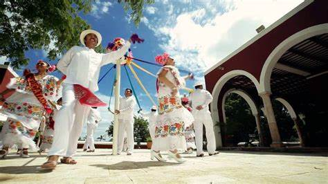

LAS JARANAS
La Jarana es una danza folclórica yucateca que forma parte de las tradiciones culturales del estado de Yucatán, en
México. Es una expresión artística y festiva que refleja la identidad y la historia de la región.
MÚSICA
La Jarana se caracteriza por su ritmo animado y contagioso, acompañado de música tradicional yucateca. Los
instrumentos utilizados incluyen la guitarra, la jarana (una guitarra pequeña de ocho cuerdas), el requinto, la
tambora (tambor) y la marimba. La música tiene influencias europeas y africanas, así como elementos
indígenas.
LA DANZA
La Jarana tiene una coreografía dinámica que incluye pasos rápidos, giros y movimientos coordinados entre los
bailarines. Los pasos varían según la región y el estilo de la danza, pero generalmente son alegres y llenos de
energía.
VESTIMENTA
Los bailarines visten trajes tradicionales que reflejan la cultura yucateca. Para los hombres, esto puede incluir
guayaberas blancas bordadas, pantalones blancos, sombreros de ala ancha y huaraches (sandalias de cuero). Las
mujeres suelen usar vestidos coloridos llamados "terno yucateco", que consisten en una falda larga y amplia, una
blusa bordada y un rebozo (chal) en la cabeza.
TEMÁTICA
La Jarana puede representar una variedad de temas, como la vida rural, las celebraciones festivas, las tradiciones
religiosas y las historias folclóricas de la región. Algunas danzas tienen narrativas específicas que se
representan a través de los movimientos y la música.
En resumen, la Jarana es una danza folclórica emblemática de Yucatán, México, que celebra la identidad y la
cultura de la región a través de música, baile y vestimenta tradicional. Con su ritmo alegre, coreografía dinámica
y vibrantes trajes, la Jarana es una expresión vibrante de la vida y las tradiciones de Yucatán.

La Danza de las Cintas es una danza tradicional que se practica en diferentes partes de México, incluido el
estado de Yucatán. También se le conoce como "Danza de las Cintas Mayas" o "Danza de los Palitos". Esta danza es
una representación simbólica de la conexión entre la tierra, el cielo y el cosmos, y se asocia con celebraciones
religiosas y festivales comunitarios.
Cintas y Palos: En la Danza de las Cintas, los bailarines sostienen cintas de colores en sus manos, que están
atadas a un poste central. A medida que bailan alrededor del poste, las cintas se entrelazan, formando un patrón
colorido. En algunas variantes, los bailarines también pueden sostener palos, que simbolizan la conexión entre la
tierra y el cielo.
LA DANZA
La danza sigue una coreografía específica, con movimientos coordinados entre los bailarines. Los pasos pueden
incluir giros, saltos y movimientos circulares alrededor del poste central. A medida que la danza progresa, las
cintas se entrelazan y desenredan, creando un espectáculo visual impresionante.
MÚSICA
La Danza de las Cintas suele ir acompañada de música tradicional, que puede incluir instrumentos como tambores,
flautas y sonajas (instrumentos de percusión). La música crea un ritmo festivo que guía los movimientos de los
bailarines y añade un ambiente alegre a la danza.
VESTIMENTA
Los bailarines suelen vestir trajes tradicionales que reflejan la cultura yucateca, como faldas largas y amplias,
blusas bordadas y rebozos (chales) en la cabeza. Los colores de los trajes pueden variar según la región y la
ocasión, pero suelen ser vibrantes y llamativos.
En resumen, la Danza de las Cintas es una expresión artística y cultural significativa en el estado de Yucatán,
México, que representa la conexión entre la tierra, el cielo y el cosmos. Con su simbolismo profundo, movimientos
elegantes y colorida estética, esta danza es una manifestación vibrante de la rica herencia cultural de la región.
VAQUERÍA YUCATECA
La Vaquería Yucateca es una danza folclórica tradicional de Yucatán, México, que representa la vida rural y
ganadera de la región. Es una expresión colorida y festiva de la cultura yucateca, que se baila en celebraciones
populares y fiestas
MÚSICA
La música de la Vaquería Yucateca es alegre y enérgica, con ritmos pegajosos que invitan al baile. Se interpreta
con instrumentos tradicionales como la guitarra, la jarana (una guitarra pequeña de ocho cuerdas), el violín, el
tambor y la marimba. La música suele estar acompañada de coros festivos que añaden un ambiente animado a la
danza.
VESTIMENTA
Los bailarines y bailarinas visten trajes típicos de vaqueros y vaqueras, que incluyen sombreros de ala ancha,
camisas bordadas, chalecos, pantalones amplios y botas de cuero. Las mujeres suelen llevar faldas largas y amplias
con encajes y adornos coloridos.
COREOGRAFÍA
La Vaquería Yucateca incluye una serie de movimientos y pasos de baile que imitan actividades propias de la vida
rural, como la monta de caballos, el manejo del lazo y el trabajo en el campo. Los bailarines forman parejas y
realizan movimientos coordinados al ritmo de la música.
CULTURA
La danza fomenta la interacción y la camaradería entre los participantes y el público. Los bailarines suelen
invitar a espectadores a unirse a la danza, formando grandes círculos de baile donde todos pueden participar y
disfrutar de la celebración.
En resumen, la Vaquería Yucateca es una danza folclórica vibrante y colorida que representa la vida rural y
ganadera de Yucatán, México. Con su música animada, vestimenta tradicional y movimientos festivos, esta danza es
una expresión auténtica de la identidad cultural yucateca y una parte importante de su patrimonio cultural.
BOMBA YUCATECA
La Bomba Yucateca es una expresión folclórica originaria del estado de Yucatán, México. Aunque comparte el mismo
nombre con el género musical puertorriqueño, la Bomba Yucateca tiene características propias que la distinguen y
la hacen única en la región.
MÚSICA
La Bomba Yucateca se caracteriza por su ritmo contagioso y alegre, con una marcada influencia de la música
tradicional yucateca. Se interpreta con instrumentos como guitarras, violines, jarana y percusiones como el tambor
y la caja.
DANZA
Al igual que en la Bomba puertorriqueña, la danza es una parte esencial de la Bomba Yucateca. Los bailarines
realizan movimientos enérgicos y coordinados al ritmo de la música, con pasos que reflejan la alegría y la
vitalidad de la cultura yucateca.
VESTIMENTA
Los trajes utilizados en la Bomba Yucateca suelen reflejar la tradición y la identidad cultural de la región. Esto
puede incluir vestidos coloridos para las mujeres y trajes típicos de vaquero para los hombres, complementados con
sombreros de ala ancha y accesorios tradicionales.
TEMÁTICA
La temática de la Bomba Yucateca a menudo gira en torno a aspectos de la vida cotidiana en Yucatán, como las
festividades, las tradiciones, la naturaleza y las costumbres locales. Las letras de las canciones pueden hacer
referencia a temas regionales y populares entre la comunidad.
En resumen, la Bomba Yucateca es una expresión folclórica vibrante y colorida que refleja la identidad cultural
yucateca. Con su música animada, danza enérgica y vestimenta tradicional, la Bomba Yucateca es una parte integral
del patrimonio cultural de Yucatán y una manifestación única de la riqueza cultural de la región.
BAILE
VIDEO
ÉPOCA DEL AÑO
Las jaranas
La Jarana es un baile folclórico tradicional de México, especialmente asociado con el estado de Veracruz. Se
realiza durante todo el año en diversas festividades y eventos culturales, como fiestas patronales, festivales
folclóricos y celebraciones comunitarias.
Danza de las cintas
Esta danza es común en varios países de América Latina y España. Se realiza típicamente durante las
festividades de mayo, especialmente en países de tradición católica, donde se celebran festividades en honor a
la Virgen María. En México, por ejemplo, es común ver la Danza de las Cintas durante las celebraciones del Día
de la Cruz el 3 de mayo.
Vaqueria Yucateca
La Vaquería Yucateca es una celebración tradicional de Yucatán, México. Se lleva a cabo principalmente
durante las festividades en honor a la Virgen de la Candelaria, que tienen lugar en febrero. La vaquería es
una celebración colorida que incluye música, baile y comida tradicional, y es una parte importante de la
cultura yucateca.
Bomba Yucateca
La Bomba Yucateca es un baile folclórico tradicional de Yucatán, México. Al igual que la Vaquería Yucateca,
se asocia principalmente con las festividades en honor a la Virgen de la Candelaria en febrero. La bomba es
una danza animada y alegre que forma parte de las celebraciones culturales en la región de Yucatán durante
esta época del año.